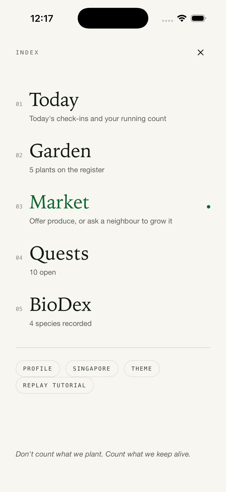
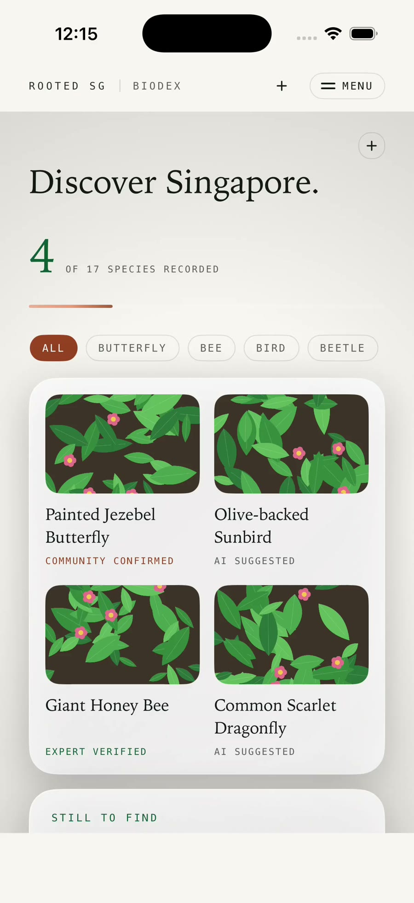
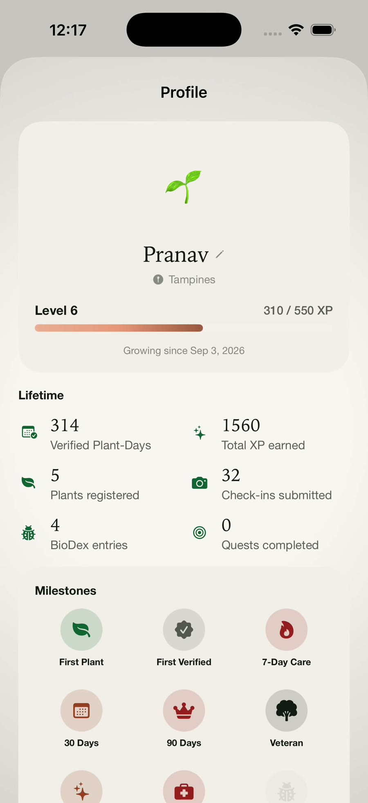

Pitch PerfectSingapore · 2026
Pranav Menon · Jiya Shah
free seed packets handed out since 2020
records of how many survived
Singapore residents we surveyed
want to grow plants at home
tried, and stopped
ME · measure
Soil, air, light and the stem.
CO · eco
The small ecosystem you look after.
MECO · the bundle
The RootStake module + the Rooted SG app.
Half one · measures
RootStake module
- House module
- Soil probe and tube
- Stem electrode
Half two · counts

Rooted SG app
- Garden and check-ins
- Market and BioDex
- Verified plant-days
The bundle
Measure, decide,
water, verify
- One loop
- Used together
heymeco.xyz
1 of 5
One plant, one house, two probes.
The whole kit on one pot: a house module beside it, a soil probe in the soil, a stem electrode on the stem. Everything is real CAD.
2 of 5
The soil probe.
A printed spade with a resistive moisture fork, two turns of copper for conductivity, and a 4.5 mm tube that waters the roots.
3 of 5
The stem electrode.
Two extremely thin titanium micro-needles on a small clip. They sit in the stem and read how the tissue conducts.
4 of 5
The house module.
An ESP32-S3 under a gable roof with two 70 mm solar panels and an air sensor. It reads everything and talks to the phone.
5 of 5
Joined by wire and tube.
No arm, no clamp: a thin wire from the house to each probe, and the tube that carries water down the soil probe.
1 of 9
Spade probe.
26.4 × 15.9 mm, 151 mm long. One part in the pot.
2 of 9
Printed in two halves.
Split face-up, no supports. Fourteen iterations to get the point right.
3 of 9
Chisel point.
A 40 mm toothed chisel on a 4 mm pitch, so it goes in by hand.
4 of 9
Moisture window and copper.
A bevelled window over the sensor, and two turns of bare copper that read conductivity.
5 of 9
The fork slides in.
The resistive moisture fork lies on the board plane between the halves, its wires leaving out of the top.
6 of 9
Tube and pH electrode seat.
A 4.5 mm tube drops into the channel behind the fork. A slim pH electrode sits beside it (prototype).
7 of 9
Close it up.
Both halves close around everything. Seen through the shell, it all fits.
8 of 9
Push to the mark.
Every reading comes from the same depth.
9 of 9
Then it waters.
The tube exits at the centre of the nose, so water reaches the roots, not the dry crust.
1 of 6
Two micro-needles go in.
The clip closes and the two extremely thin titanium needles slip through the outer skin of the stem, about a pinprick each, and stop in the conducting tissue.
2 of 6
Why titanium, why so thin.
Two titanium micro-needles, far thinner than a pin, so the stem barely notices them. A clip holds them a fixed distance apart, so every reading has the same geometry.
3 of 6
What it does.
It sends a tiny alternating current from one needle to the other and measures how hard the tissue pushes back. That push-back is called impedance.
4 of 6
Why two frequencies.
Low frequencies cannot cross a living cell membrane, so they go around the cells. High frequencies pass through them. The gap between the two tells us how healthy the tissue is.
5 of 6
What it is for.
When a plant loses water, or its cells start to leak, the low-frequency reading falls. That shows up before the leaves look different.
6 of 6
And what it is not.
A trend and its timing, never a calibrated number, raised only when the soil and air sensors agree. It is a prototype.
1 of 7
A slice through the stem.
Skin on the outside, rows of cells inside, water-carrying vessels below. This is what the needles go into.
2 of 7
One cell.
A wall, a membrane inside it, a big vacuole of water, a nucleus and the chloroplasts that make sugar.
3 of 7
The needles go in.
Two titanium tips stop in the tissue, a few cells apart, with fluid running in the gaps between the cells.
4 of 7
1 kHz: around the cells.
The membrane blocks low frequencies, so the current has to wind through the gaps. Watch it follow the cell walls.
5 of 7
100 kHz: through the cells.
At high frequency the current passes straight through the membranes. The two readings differ by how intact the cells are.
6 of 7
Then a hypha arrives.
A fungal thread grows through the gaps, swells against a wall and pushes a peg in.
7 of 7
A leaking cell is an easier path.
The membrane stops holding its contents. Ions spill into the gaps, and the low-frequency end of the curve falls, while the leaf still looks fine.
1 of 6
A whole field.
Hundreds of plants, all alike. One of them carries a RootStake.
2 of 6
One module, one sentinel plant.
The house sits on one plant. Its electrode reads that plant only, and its air sensor reads the weather everyone shares.
3 of 6
The weather is shared.
Humidity and leaf wetness are about the same across a block, so one well-placed station speaks for the plants around it.
4 of 6
Then the fungus arrives.
Colonies take hold where the conditions allow. The risk grows across the field, but the module never claims to see a neighbour's leaf.
5 of 6
The sentinel is checked too.
When the sentinel's own tissue starts to change, the electrode sees it, and only then is it raised, with the weather agreeing.
6 of 6
Now look inside.
Next: the cells of that stem.
1 of 8
Sense: the stem.
The electrode sweeps 1 to 100 kHz through the stem. Prototype signal, trend only.
2 of 8
Sense: the soil.
Resistive moisture, plus copper turns for conductivity, which is how we watch the feed.
3 of 8
Pack: the house.
The ESP32-S3 samples everything, adds air and light, and packs one 46-byte frame with a CRC-16.
4 of 8
Send: Bluetooth.
The frame rides Bluetooth LE to the phone. Stakes on a block can mesh.
5 of 8
Decide: the app.
It answers in a verb: Water it now, or Nothing to do today. The command goes back down the same link.
6 of 8
Deliver: the pumps.
A relay closes, two small pumps merge at a Y into one line. It starts at the floor and stops at the target.
7 of 8
Deliver: the nose.
Water and feed run down the hidden bore and leave at the nose, at the root ball. Moisture climbs.
8 of 8
Verify.
If moisture recovered, it counts as a verified plant-day. If it did not, the app says so and does not dose again.
Every pot, ordered so whatever needs you today is at the top.
Offer produce, or ask a neighbour. Singapore grows under 10% of what it eats.
Ten quests open at a time, each a small real action.
Four of seventeen species recorded. Discover Singapore.
Level 6, 314 verified plant-days, milestones from First Plant to Veteran.




Rooted counts verified plant-days: a day only counts when the plant was checked in and still alive. Survival, plus recovery from a struggling period, is what earns a Legacy Plant.
plant-days
check-ins
day streak
Built
6 sensors
On the stake you can print
- Soil moisture and conductivity
- Air temperature, humidity, pressure
- Light and daily-light integral
- Every dose logged with its volume
Prototype
Stem EIS
Trend and timing only
- Two titanium needles on a sprung clip
- 1 kHz to 100 kHz sweep
- Never a calibrated figure
- Raised only when soil and air agree
Roadmap
Ions
Not measured yet, and labelled
- Nitrate and phosphate sensing
- Stem sap flow
- Simulated values say so on screen
- Electro-culture: off, an experiment
Rooted will not solve food security.
It aims to raise participation, knowledge and local growing. Small household actions add up, but they are not a farm.
Stem impedance is a prototype.
It works on the bench. We report trend and timing, never a calibrated figure.
Ion sensing and sap flow are not built.
They sit on the roadmap and are labelled as simulated wherever they appear.
One stake cannot see a neighbour's fungus.
Block warnings come from shared weather. The electrode reads only its own plant.
Electro-culture is not a claim.
It ships off, logged as an experiment.
Don't count what we plant. Count what we keep alive.
Pranav Ramanathan · Anandita Shetty · Pranav Menon · Jiya Shah
heymeco.xyz